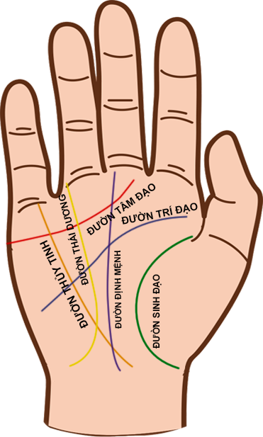
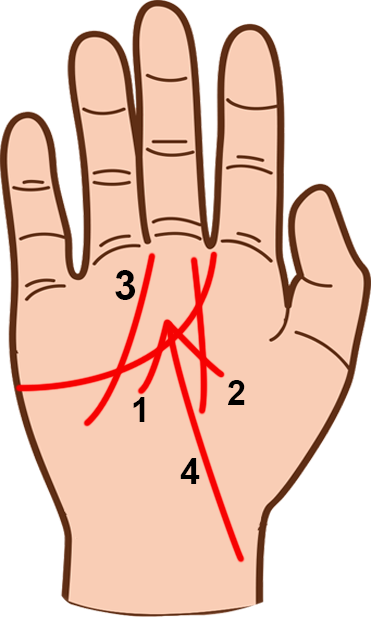
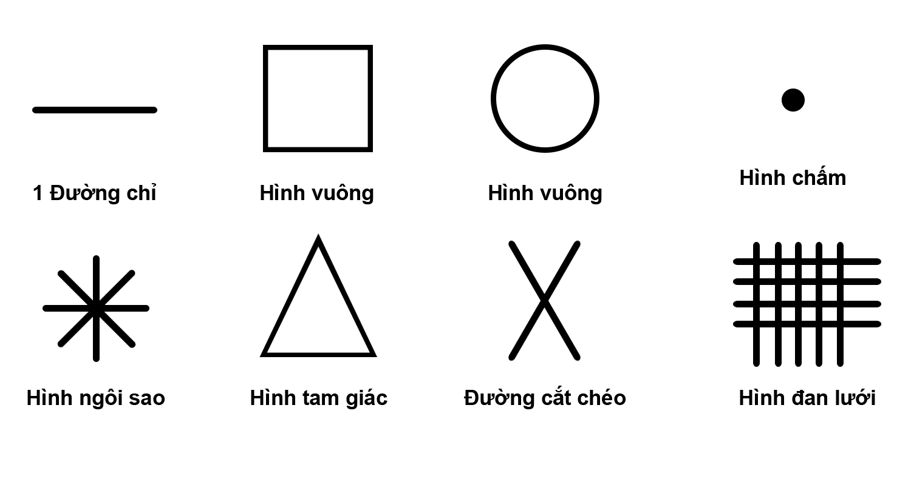

Đường thái dương (Đường may mắn) Trong tướng tay, muốn xem thành công và tài năng của một
người,
phần nhiều sẽ dựa vào đường Thái Dương và gò Thái Dương. Đường Thái Dương là đường thành
công,
đường thần mặt trời, đường vận may và tài hoa; bắt nguồn từ một nơi nào đó của bàn tay,
thường
là nó đi thẳng từ Trí Đạo hay Tâm Đạo lên phần nổi dưới chân ngón đeo nhẫn (gọi là gò Thái
Dương). Đường Thái Dương thể hiện sự may mắn, thành công, tài năng và tiền bạc trong cuộc
sống
mỗi người. Hiếm khi thấy nó nằm dưới đường Tâm Đạo. Đường này càng dài thì càng nhiều may
mắn.
Nếu người nào có 2 hoặc 3 đường này thì cơ hội may mắn và vận mệnh của họ sẽ rất tốt đẹp.

Đường Thái Dương thể hiện sự may mắn, thành công, tài năng, tiền bạc trong cuộc sống. Dựa vào
hình dáng, vị trí đường Thái Dương ta có những đặc điểm chính như sau: 1. Đường Thái Dương ngắn
Người có đường Thái Dương ngắn (chưa được 1cm hay 1,5cm) là người có tham vọng. Họ có thể nhanh
chóng đạt được những mục tiêu và mơ ước của mình. 2. Đường Thái Dương cong chạy xuống phía ngón
tay cái Người này làm việc rất chăm chỉ, có trách nhiệm và nỗ lực hết mình cho công việc. Họ tự
thân vận động, không thích ỷ lại hay dựa dẫm vào người khác. Với sự tự lực vốn có, họ dễ gặt hái
được nhiều thành công trong sự nghiệp.

Hình dáng các đường Thái Dương hay gặp 3. Đường Thái Dương cong, cách xa ngón tay cái Người sở
hữu đường này sẽ có nhiều điều tốt đẹp trong cuộc đời. Họ rất thích hợp và có nhiều cơ hội thành
công hơn nếu làm các việc liên quan đến công chúng. Uy tín và danh tiếng của họ vì thế cũng được
khẳng định. 4. Đường Thái Dương dài, chạy thẳng tắp lên phía trên Người có đường Thái Dương dài
sẽ có cuộc sống giàu có và luôn gặp may mắn. Cuộc đời của họ khá suôn sẻ, dễ thành công trong sự
nghiệp. Vì đường Thái Dương thường đi qua phần mô thịt nằm dưới ngón đeo nhẫn - vị trí gò Thái
Dương, nên gò này cũng tượng trưng cho năng khiếu và tài năng của một người. Nếu trong gò Thái
Dương có các đường chỉ tay xuất hiện, sẽ có thể đoán về thành công của người đó.
Hình dáng các đường Thái Dương hay gặp 3. Đường Thái Dương cong, cách xa ngón tay cái Người sở
hữu đường này sẽ có nhiều điều tốt đẹp trong cuộc đời. Họ rất thích hợp và có nhiều cơ hội thành
công hơn nếu làm các việc liên quan đến công chúng. Uy tín và danh tiếng của họ vì thế cũng được
khẳng định. 4. Đường Thái Dương dài, chạy thẳng tắp lên phía trên Người có đường Thái Dương dài
sẽ có cuộc sống giàu có và luôn gặp may mắn. Cuộc đời của họ khá suôn sẻ, dễ thành công trong sự
nghiệp. Vì đường Thái Dương thường đi qua phần mô thịt nằm dưới ngón đeo nhẫn - vị trí gò Thái
Dương, nên gò này cũng tượng trưng cho năng khiếu và tài năng của một người. Nếu trong gò Thái
Dương có các đường chỉ tay xuất hiện, sẽ có thể đoán về thành công của người đó.

Vị trí gò Thái Dương - 1 đường chỉ đơn: Đường này xuất hiện trên gò Thái Dương cho thấy chủ nhân
là người dễ trở nên giàu có. - 2 đường chỉ: Đường này cho thấy chủ nhân là người có tài năng
thực sự nhưng không gặt hái được nhiều thành công. - Nhiều đường chỉ: Khi nhiều đường chỉ xuất
hiện cho biết người này có xu hướng trở thành nghệ sỹ và có thể sẽ gặt hái được nhiều thành công
trong lĩnh vực sáng tạo nghệ thuật. - Đường cắt chéo: Đây là dấu hiệu cho thấy sự thành công sẽ
đến với họ khi làm bất cứ công việc gì. - Hình sao: Hình này cho thấy khả năng trở thành người
nổi tiếng của họ là rất gần. Tuy nhiên, muốn đạt được mục tiêu ấy thì họ phải chấp nhận nguy
hiểm. - 1 chấm: Dấu hiệu này cho thấy vị trí của chủ nhân đang bị lung lay, danh tiếng bị giảm
sút.

Các đường chỉ thường xuất hiện trên gò tay
- Hình tròn: Hình tròn thường rất hiếm gặp trong lòng bàn tay của người bình
thường. Nếu dấu hiệu này xuất hiện trên gò Thái Dương thì người đó rất nổi tiếng.
- Hình vuông: Hình vuông xuất hiện trên gò Thái Dương cho thấy người này có đầu óc
kinh doanh.
- Hình tam giác: Dấu hiệu này cho thấy một người bao dung, hay giúp đỡ người khác.
- Hình đan lưới: Hình đan lưới cho thấy một người có tính tự cao tự đại.